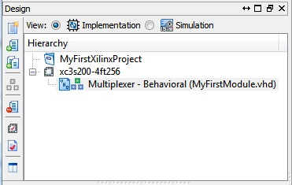
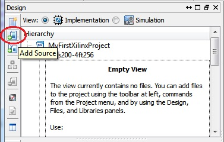
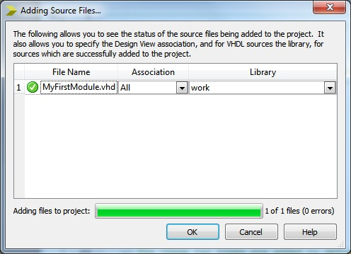

EEE6225 Systems Design
| Tutorial 1: Introduction to VHDL and Xilinx ISE |
| Adding an existing module to your project |
You may not need to do this step if your new source file is already listed in the Hierarchy window as being associated with your project. |
|  Figure 1. Project hierarchy showing newly created module |
If not as above, here is how to associate a file with a particular project. Either click on the Add Source icon as indicated in Figure 2 or from the menu select Project > Add Source..., click on the file MyFirstModule.vhd followed by Open. |
|  Figure 2. Add source icon (highlighted) |
When the Adding Source Files... dialogue box appears, both the Association and Library fields should be set to All and work respectively (see Figure 3). |
|  Figure 3. Adding an existing source file |
The file should now appear in the Hierarchy window below the project name (as shown in Figure 1). |
| Continue on to Analysing your file |